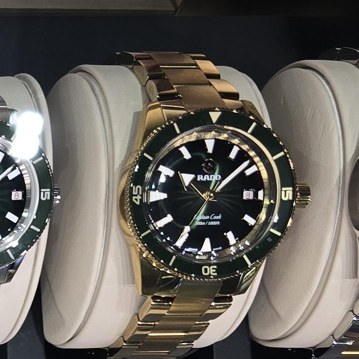

Store sighting · original Lumio photograph
Rado Captain Cook · Green and gold
A green-and-gold Captain Cook photographed by Lumio in store. The saturated bezel and yellow-gold tone bracelet create a more expressive version of Rado’s heritage diver.
Family
Rado Captain Cook · automatic diver
Reference and price
Verification in progress. Lumio only adds a buying link after confirming the exact reference.
Photo
Original Lumio store photography · 16 Oct 2026
